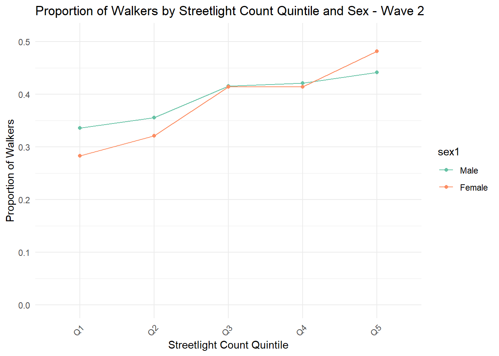
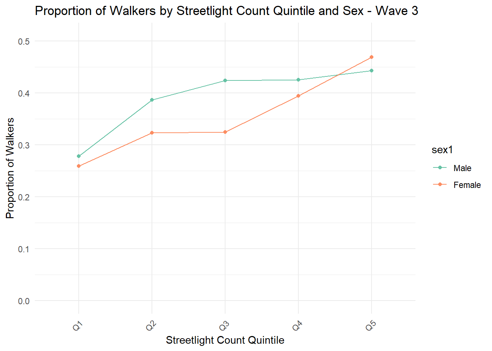
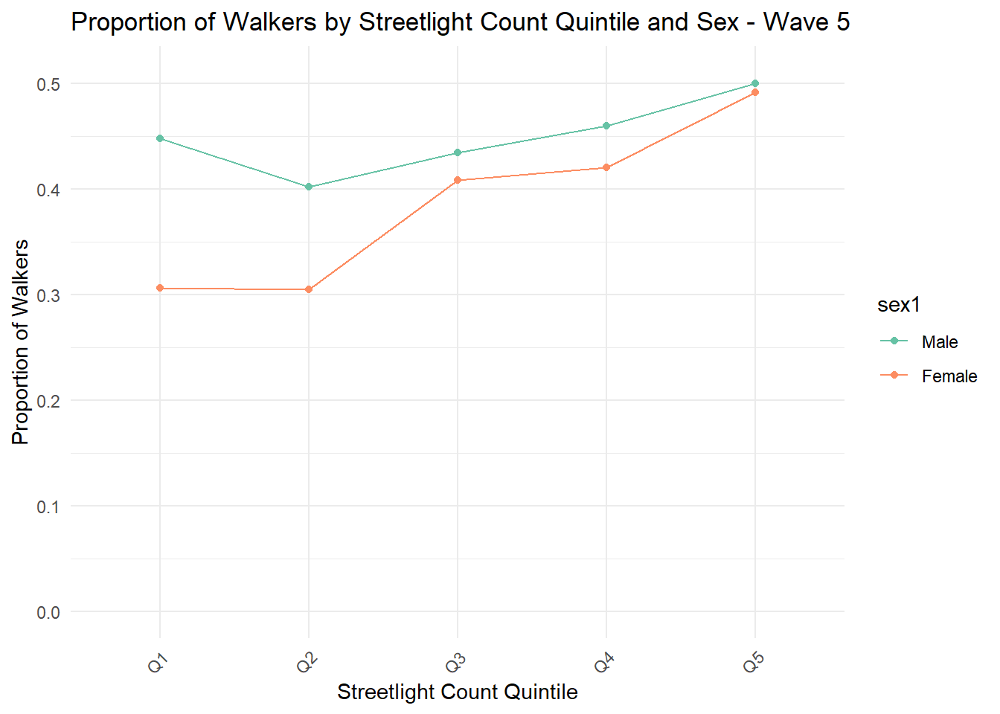
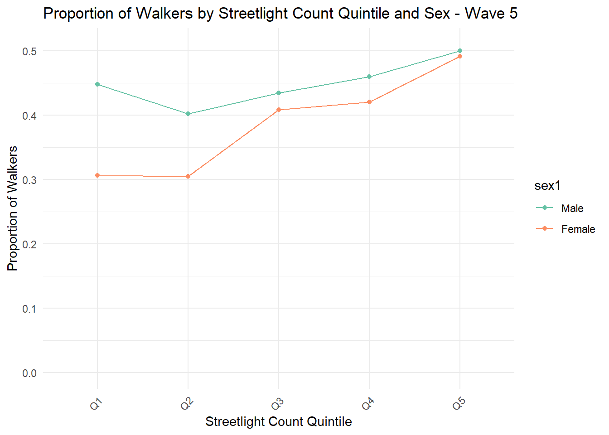

Longitudinal Analysis
Data preparation
- Excluded the participants who moved residence in between surveys
- Excluded the respondents who were not the same person at each wave
- Excluded the respondents who had missing values for transport walking for all waves
- Excluded the participants who had missing values for education at baseline
- Excluded people who did not provide data for at least one neighbourhood preference questions at baseline
- Excluded people who doesn’t have values for residential density, street connectivity, and land-use mix at baseline
Plots
Proportion of transport walkers Vs streetlight count by sex
 
